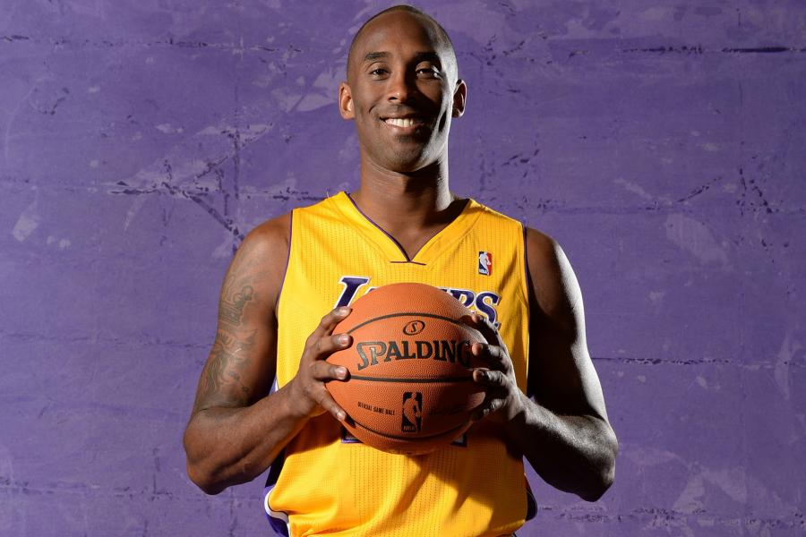
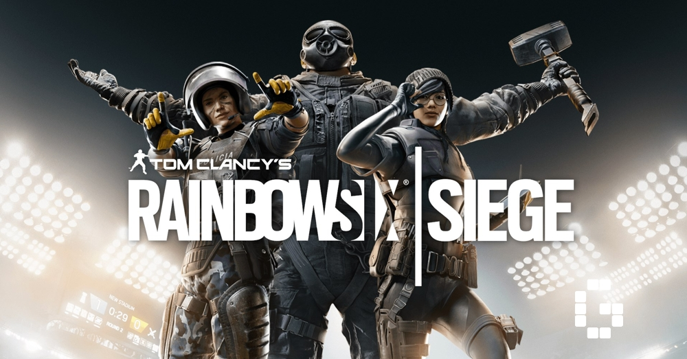

The reason why I love basketball is because of the adrenaline rush and the thrill. The skill in playing basketball really amazes me while the balls go into the nets making that "swish" sound. My favourite NBA team are the Los Angeles Lakers

The reason why video games are also my favourite is because they are a perfect distraction from reality. It is a great source for entertainment and it also boots your mood and improves happiness. My favourite video games are Rainbow Six Siege and Fortnite

Working out has to be my favourite thing to do out of all the other thing listed due to how it makes you feel better about yourself, you look better, and all the stress and tension you have built up goes away. I love working out.